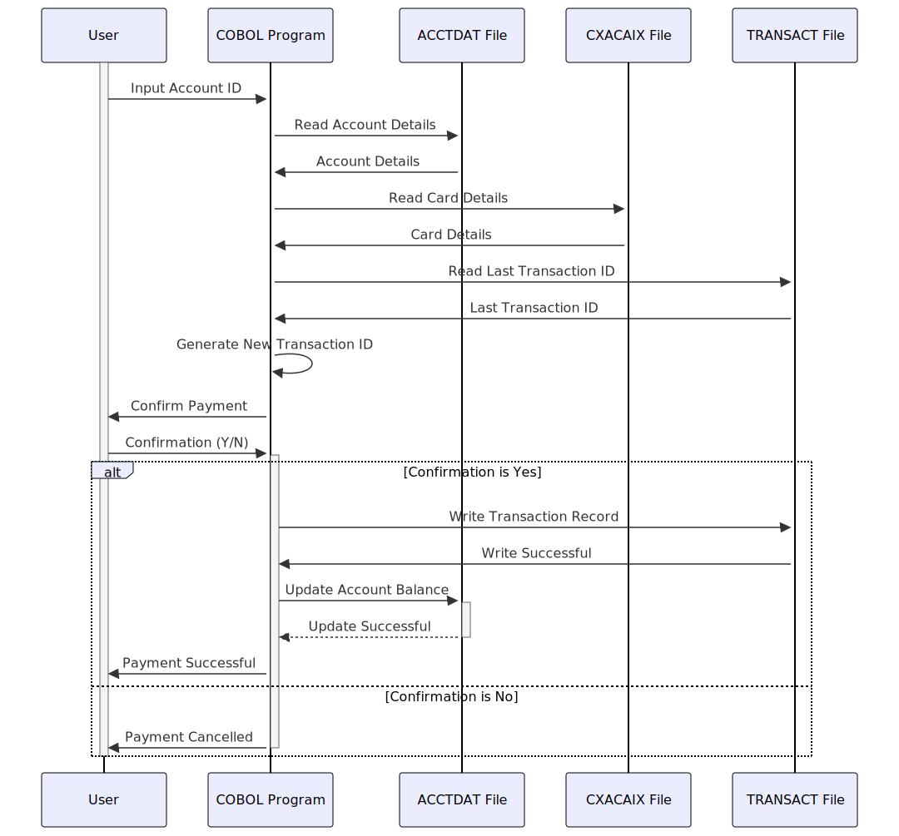

Gerado em: 1º de outubro de 2024
Título do Documento: CardDemo - Especificação de Pagamento de Fatura Online
Descrição Resumida:
Este documento descreve as especificações para a funcionalidade “Pagamento de Fatura Online” dentro da aplicação CardDemo. Esta funcionalidade permite que os titulares de cartão de crédito paguem convenientemente o seu saldo devedor integralmente através de uma interface online. Este processo é integrado com o sistema de gestão de cartão de crédito principal, garantindo atualizações precisas de saldo e registo de transações.
Histórias do Usuário: Como titular de cartão de crédito, quero poder pagar minha fatura online para evitar multas por atraso e manter minha conta em dia.
Epic Relacionado: 4 - Processamento de Transações
Requisitos Técnicos:
ACCT-ID da entrada do usuário.ACCOUNT-RECORD do arquivo ACCTDAT usando ACCT-ID como chave.ACCT-CURR-BAL de ACCOUNT-RECORD.ACCT-CURR-BAL.TRAN-ID do arquivo TRANSACT.TRAN-ID recuperado em 1 para gerar um novo TRAN-ID exclusivo.TRAN-ID exclusivo.TRAN-ID (gerado).TRAN-TYPE-CD = ‘02’ (Pagamento de Fatura).TRAN-CAT-CD = 2.TRAN-SOURCE = ‘POS TERM’.TRAN-DESC = ‘BILL PAYMENT - ONLINE’.TRAN-AMT = ACCT-CURR-BAL.TRAN-CARD-NUM de CARD-XREF-RECORD.TRAN-MERCHANT-ID = 999999999.TRAN-MERCHANT-NAME = ‘BILL PAYMENT’.TRAN-MERCHANT-CITY = ‘N/A’.TRAN-MERCHANT-ZIP = ‘N/A’.TRAN-ORIG-TS = Timestamp atual.TRAN-PROC-TS = Timestamp atual.TRAN-RECORD no arquivo TRANSACT com os dados acima.ACCT-ID da entrada do usuário.ACCT-CURR-BAL (recuperado de ACCOUNT-RECORD).TRAN-AMT de ACCT-CURR-BAL.ACCT-CURR-BAL em ACCOUNT-RECORD no arquivo ACCTDAT.Modelos Relacionados:
ACCOUNT-RECORD:
ACCT-ID:String Identificador exclusivo para a conta de um cliente.ACCT-CURR-BAL: Decimal Saldo devedor atual na conta.TRAN-RECORD:
TRAN-ID: String Identificador exclusivo para cada transação.TRAN-TYPE-CD: String Código que especifica o tipo de transação (por exemplo, ‘02’ para Pagamento de Fatura).TRAN-CAT-CD: Integer Código que representa a categoria da transação.TRAN-SOURCE: String Origem da transação (por exemplo, ‘POS TERM’, ‘ONLINE’).TRAN-DESC: String Descrição da transação.TRAN-AMT: Decimal Valor da transação.TRAN-CARD-NUM: String Número do cartão de crédito associado à transação.TRAN-MERCHANT-ID: Integer Identificador exclusivo para o comerciante envolvido na transação.TRAN-MERCHANT-NAME: String Nome do comerciante associado à transação.TRAN-MERCHANT-CITY: String Cidade do comerciante.TRAN-MERCHANT-ZIP: String CEP do comerciante.TRAN-ORIG-TS: Timestamp Timestamp indicando quando a transação foi iniciada.TRAN-PROC-TS: Timestamp Timestamp indicando quando a transação foi processada.CARD-XREF-RECORD:
XREF-ACCT-ID: String ID da conta usado para referência cruzada com os detalhes do cartão.XREF-CARD-NUM: String Número do cartão de crédito vinculado ao ID da conta.Configurações:
WS-TRANSACT-FILE: TRANSACT - Nome do arquivo para registros de transações.WS-ACCTDAT-FILE: ACCTDAT - Nome do arquivo para detalhes da conta.WS-CXACAIX-FILE: CXACAIX - Nome do arquivo para referência cruzada de cartão e conta.TRAN-TYPE-CD: 02 - Código do tipo de transação para pagamento de fatura.TRAN-CAT-CD: 2 - Código da categoria de transação para pagamento de fatura.TRAN-SOURCE: POS TERM - Origem da transação padrão para pagamento de fatura.TRAN-MERCHANT-ID: 999999999 - ID do comerciante padrão para pagamento de fatura.TRAN-MERCHANT-NAME: BILL PAYMENT - Nome do comerciante padrão para pagamento de fatura.Melhorias de Código:
RESP e REAS, registrá-los em um arquivo ou banco de dados para fins de depuração. Fornecer mensagens de erro mais amigáveis ao usuário.ACCT-ID. Verificar se há caracteres válidos, comprimento e formato.PROCESS-ENTER-KEY em parágrafos menores e mais gerenciáveis para melhor legibilidade e manutenção.Melhorias de Segurança:
Diagrama Conceitual:
–Made by “Smart Engineering” (by Compass.UOL)–